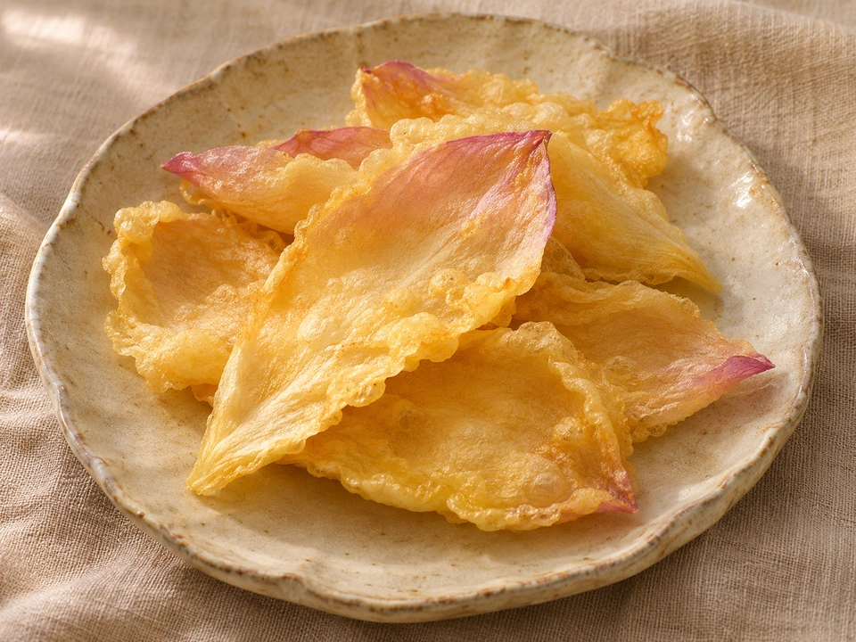

BLOOM TO TABLE
炸荷花
选用食用来源的荷花瓣，洗净沥干后裹薄面糊，分片下锅炸熟，沥油后趁热品尝。
食用荷花瓣 · 酥炸 · 约 2 人份
准备食材
- 确认可食用的荷花瓣约 10—12 片
- 面粉 40 克
- 玉米淀粉 20 克
- 鸡蛋 1 个
- 清水、食用油及少量盐或糖
制作步骤
- 从可靠食用渠道选购荷花瓣，逐片清洗后充分沥干，轻轻吸去表面水分。
- 面粉、淀粉、鸡蛋与适量清水搅匀，调成能薄薄挂住花瓣的面糊。按口味加入少量盐或糖。
- 锅中倒入适量油，中火加热。花瓣逐片裹一层薄糊，分批下锅，避免粘连。
- 炸至面糊定型、两面浅金黄且熟透后捞出沥油，稍放凉后食用。
选择可靠渠道的食用原料，不采摘景区或绿化带花叶入菜。本文为家常烹饪参考，并非中江独有菜式。 用量可按人数与口味调整。